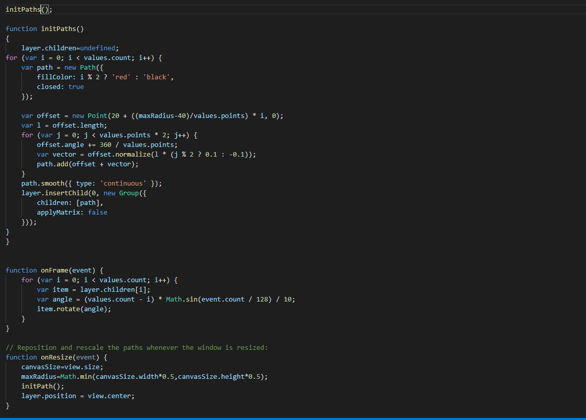
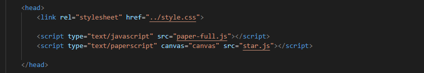
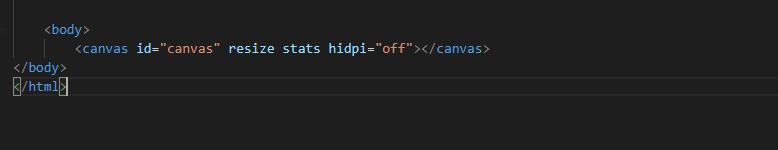

Paper.js Beispiel
- Vector Grafik Framework
- Läuft in HTML5 canvas
- Fokus auf Geschwindigkeit und 2D Animation
- Durch Vectorrendering gut skalierbar
- Von js abgeleitete eigene Scriptsprache: Paperscript
Nutzung
Paperscript
Paperscript entält von Grund auf auf 2D Animation ausgelegte Klassen, wie Path und Rectangle für Geometrie und Point und Size als Datentypen und für Vectorgeometrie.

Paper.js in HTML einbinden

Canvas erstellen. Wichtig: Canvas id muss mit der oben angegebenen canvas id übereinstimmen.

Links
Paper.js
Paper.js Beispiele
Paper.js Reference